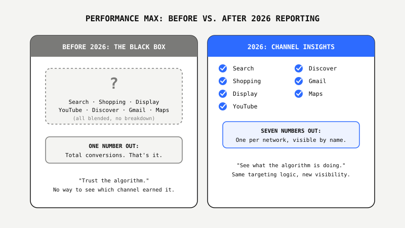
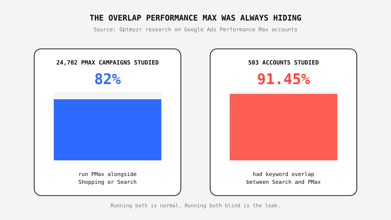

Performance Max Stopped Being A Black Box In 2026. Most Brands Still Run It Like One.

Key Takeaways
- Performance Max stopped being a black box in 2026. Google's new Channel Insights report finally breaks performance down by Search, Shopping, Display, YouTube, Discover, Gmail, and Maps, ending years of "trust the algorithm" opacity.
- Standard Shopping wasn't replaced. Optmyzr's study of 24,702 Performance Max campaigns found 82% of advertisers run PMax alongside Standard Shopping or Search, not instead of them.
- The new visibility surfaced a leak that was always there. Optmyzr found 91.45% of 503 accounts studied had keyword overlap between Search and Performance Max, meaning the two campaign types were quietly bidding against each other.
- Growth stalled the same quarter reporting improved. Smarter Ecommerce's Q1 2026 report found PMax conversion growth dropped from roughly 12% year-over-year to 0%, while PMax costs roughly doubled year-over-year over the same stretch.
- More visibility doesn't fix an account by itself, it just makes it obvious the account needs fixing. The e-commerce brands winning in 2026 are the ones actually opening the new reports, not just admiring that they exist.
Remember Hiring A Bookkeeper Who Only Ever Told You "You Made Money"?
No breakdown by client. No line item for which expense hit hardest. Just one number at the end of the month, take it or leave it. You'd fire that bookkeeper. But that's exactly how Performance Max operated for most e-commerce advertisers since it launched: hand Google the budget, get back a revenue number, and take the algorithm's word for where the money actually went.
For years, that trade was the deal. Performance Max pools Search, Shopping, Display, YouTube, Discover, Gmail, and Maps into one campaign and lets Google's AI shift budget between them in real time. The pitch was simple: stop micromanaging channels, let the machine find the best combination. The catch was just as simple: advertisers couldn't see which channel was actually earning the credit for a sale, only the total.
In 2026, that finally changed. Not the targeting logic underneath it, the visibility into it.
What Actually Changed In Performance Max This Year
The headline change is reporting. Google rolled out a Channel Insights report that breaks Performance Max performance down by network, Search, Shopping, Display, YouTube, Discover, Gmail, and Maps, instead of one blended number. Alongside it came first-party audience exclusions, full audience demographic breakdowns, and network segmentation in placement reports.
Targeting controls opened up too. Retail advertisers running product feeds can now apply brand exclusions to the Search side of PMax, campaign-level negative keywords are available to every advertiser instead of being locked out of the campaign type entirely, and a new "URL Contains" rule lets advertisers target by page category or product type for feed-based campaigns. Search themes, the closest thing PMax has to manual keyword input, expanded from 25 to 50 per asset group.
None of this changes what the algorithm optimizes for. It changes whether an advertiser can see what it's doing.

The Overlap Performance Max Was Always Hiding
Once advertisers could actually see channel-level data, a problem that was always there became impossible to ignore: Performance Max and Search campaigns competing against each other inside the same account.
Optmyzr studied 503 Google Ads accounts and found 91.45% had keyword overlap between Search and Performance Max, meaning both campaign types were eligible to serve on the same searches, sometimes bidding the advertiser's own budget against itself. Optmyzr's broader study of 24,702 Performance Max campaigns found 82% of advertisers were already running PMax alongside Shopping or Search rather than as a standalone replacement, which is normal and often correct. The problem isn't running both. It's running both without knowing where they overlap.
Before Channel Insights, an advertiser had no practical way to catch this beyond guesswork and painstaking manual audits. Now the data exists in the platform. Most accounts still aren't checking it.

Standard Shopping Isn't Dead. It's Just Not The Default Anymore
Standard Shopping campaigns are still a fully supported, fully active campaign type in Google Ads. What changed is how much of the budget flows through them versus Performance Max. Tinuiti's Q1 2026 benchmark data shows Performance Max now runs 67% of Shopping spend and 68% of Shopping-attributed sales among advertisers running both campaign types side by side.
That's not replacement, it's dominance by default. Most new e-commerce accounts get steered toward Performance Max first, and most advertisers who tested it stayed. Google has also confirmed Local Inventory Ads will be enabled by default for every standard Shopping campaign starting August 31, 2026, which matters directly for any e-commerce brand blending online and in-store or local pickup inventory: without applying inventory filters before that date, online and local listings can start blending in ways the account wasn't set up to handle.
Growth Stalled The Same Quarter Reporting Got Better
Better visibility and better performance are not the same thing, and 2026 made that obvious. Smarter Ecommerce's Q1 2026 report found Performance Max conversion growth stalled from roughly 12% year-over-year in Q4 2025 to 0% in Q1 2026, while PMax year-over-year costs roughly doubled over the same stretch, from about 0.5% to 1.0%.
The reporting upgrades didn't cause that slowdown. But they did remove the excuse for not noticing it sooner. An advertiser with Channel Insights turned on and a habit of actually reading it has a real shot at catching a stall like this inside a quarter. An advertiser still treating PMax as a black box finds out when the CFO asks why revenue is flat.
What Smart E-Commerce Brands Are Doing About It
The brands pulling ahead in 2026 aren't the ones avoiding Performance Max or the ones blindly trusting it. They're the ones treating the new reporting as a diagnostic tool, opening Channel Insights monthly, checking Search and PMax keyword overlap, and using the expanded negative keyword and brand exclusion controls to stop the account from bidding against itself.
That's the same discipline behind the e-commerce accounts we've rebuilt around AI signal quality and feed structure rather than just letting the algorithm run unchecked, work that's produced $22.9M in revenue at 632% ROAS on one account and $10.8M at 1,345% ROAS on another, both after fixing what the AI was actually being fed, not after turning PMax off.
Not sure what your Performance Max account is actually doing with its budget? We'll show you free.
Get The Free E-Commerce Audit ↗